Derive zero-coupon forward prices and compound forward yields
Useful first: Derive two-sided cost of carry and interpret spot–futures basis
Lesson outline
- 02IntroductionSee the main question, learning objectives and prerequisites.
- 03Key definitions and conceptsGet familiar with the important terms and notation.
- 04Bond forward rates and stock index parityThe same no-arbitrage question prices an investment between two future dates and a stock portfolio delivered later.
- 05Zero-coupon prices and datesA zero-coupon bond pays only face value the stated quantities at maturity.
- 06Deriving the forward-rate identityToday issue one earlier bond, receiving the stated quantities and committing to repay the stated quantities at the stated quantities.
- 07Bond forward rates and stock index parityThe same no-arbitrage question prices an investment between two future dates and a stock portfolio delivered later.
- 08Worked exampleFollow a complete application of the reasoning.
- 09Practise the reasoningWork through written tasks, with optional support and solutions.
- 10Check your reasoning: an offline quizCheck your choices and see feedback without a connection.
- 11Check your understandingReview the key distinctions and check what you can explain.
- 12Test yourself laterTry another prepared question before rereading.
- 13SourcesFind the materials and limits behind the lesson.
Introduction
In this lesson, derive zero-coupon forward prices and compound forward yields.
2.1 What you’ll learn
- Price comparable zero coupons
- Construct the issuing/buying/forward package
- Derive its forward delivery price and adjacent-period compound yield identity without forecasting future spot yields.
2.2 Before you begin
Check the foundations
A default-free bond pays \(121\) in two years at annual effective yield \(.10\). Price? Is it \(121/(1+.10\times2)\)? Separately, if issuing one earlier bond raises \(P_1\) and a later bond costs \(P_2\), how many later bonds can be bought for zero net opening cash and why must a feasible certain terminal surplus be zero when the package is reversible?
Reveal foundation explanation
\(121/(1.10)^2=100\); the simple denominator is a different convention. Buy \(q=P_1/P_2\) later bonds, so \(P_1-qP_2=0\); no-arbitrage and the feasible reverse rule out either strictly positive or negative certain payoff at fair price. Require the compound distinction and O014 zero-investment/reversibility argument. If absent, use the complete Zero-coupon prices and dates passage in this lesson before W1; O014 supplies the zero-investment replication prerequisite.
Key definitions and concepts
- Zero-coupon bond: A bond with only its face-value payment at maturity.
- Forward delivery price: Today’s agreed price for a later bond delivered at an earlier future date.
- Forward yield: The compound annualized rate implied for the interval between two maturities.
Bond forward rates and stock index parity
The same no-arbitrage question prices an investment between two future dates and a stock portfolio delivered later. Bonds require compound discount factors; the stock-index slide returns to the simple carry convention. Keeping those conventions distinct is necessary to interpret each formula correctly.

The source relationships and their limitations are on slides 9–10.
Zero-coupon prices and dates
A zero-coupon bond pays only face value \(M\) at maturity. Let \(T_1<T_2\) be maturities in years and \(r_{T_1},r_{T_2}\) the respective annual effective spot yields. Then
These are compound-price definitions for the stated yields, not the simple-interest model from the currency slide. Let \(F_{T_2}^{T_1}\) be today's agreed price for delivery of the later bond at \(T_1\), and \(f_{T_1,T_2}\) the annualized forward yield over \([T_1,T_2]\). At the earlier date the later bond has \(T_2-T_1\) years remaining, so
The forward rate is contracted/implied today. It is distinct from the as-yet-unknown spot yield that may prevail at \(T_1\). Treat the bonds as otherwise comparable and free of default risk in this idealized replication.
Deriving the forward-rate identity
Today issue one earlier bond, receiving \(P_{T_1}\) and committing to repay \(M\) at \(T_1\). Spend those proceeds on \(q=P_{T_1}/P_{T_2}\) units of the later bond, and sell those units forward for delivery at \(T_1\). Opening net investment is zero. At \(T_1\) receive \(qF_{T_2}^{T_1}\) under the forward and repay \(M\). No arbitrage gives
Insert the price formulas and cancel \(M\):
The left side is growth over the full \(T_2\) years. The right side grows first to \(T_1\), then across the remaining interval at a rate locked today. Consequently
This multiplication of growth factors is why merely subtracting spot yields does not compute the forward rate. It also explains the prerequisite: understand discounting and match dates before using a yield curve. No claim that the implied forward rate predicts the actual future rate follows from the replication.

The source's timeline ends at the earlier maturity, because the later bond is sold forward then; there is no need to wait for its final face-value payment to settle this package.
Bond forward rates and stock index parity
Read the full checked source context
The same no-arbitrage question prices an investment between two future dates and a stock portfolio delivered later. Bonds require compound discount factors; the stock-index slide returns to the simple carry convention. Keeping those conventions distinct is necessary to interpret each formula correctly.
The source relationships and their limitations are on slides 9–10.
Zero-coupon prices and dates
A zero-coupon bond pays only face value \(M\) at maturity. Let \(T_1<T_2\) be maturities in years and \(r_{T_1},r_{T_2}\) the respective annual effective spot yields. Then
These are compound-price definitions for the stated yields, not the simple-interest model from the currency slide. Let \(F_{T_2}^{T_1}\) be today's agreed price for delivery of the later bond at \(T_1\), and \(f_{T_1,T_2}\) the annualized forward yield over \([T_1,T_2]\). At the earlier date the later bond has \(T_2-T_1\) years remaining, so
The forward rate is contracted/implied today. It is distinct from the as-yet-unknown spot yield that may prevail at \(T_1\). Treat the bonds as otherwise comparable and free of default risk in this idealized replication.
Deriving the forward-rate identity
Today issue one earlier bond, receiving \(P_{T_1}\) and committing to repay \(M\) at \(T_1\). Spend those proceeds on \(q=P_{T_1}/P_{T_2}\) units of the later bond, and sell those units forward for delivery at \(T_1\). Opening net investment is zero. At \(T_1\) receive \(qF_{T_2}^{T_1}\) under the forward and repay \(M\). No arbitrage gives
Insert the price formulas and cancel \(M\):
The left side is growth over the full \(T_2\) years. The right side grows first to \(T_1\), then across the remaining interval at a rate locked today. Consequently
This multiplication of growth factors is why merely subtracting spot yields does not compute the forward rate. It also explains the prerequisite: understand discounting and match dates before using a yield curve. No claim that the implied forward rate predicts the actual future rate follows from the replication.
The source's timeline ends at the earlier maturity, because the later bond is sold forward then; there is no need to wait for its final face-value payment to settle this package.
Stock-index replication and cancellation of spot risk
Let \(S_0\) be today's value of a portfolio matching the index, \(S_1\) its delivery-date value, \(F_0\) the futures price in matching portfolio units, \(r\) the annual simple borrowing rate, \(d\) annual dividend yield and \(T\) years. Borrow \(S_0\), buy the tracking portfolio and short matching index futures.
At delivery sell the portfolio for \(S_1\), receive cumulative futures gain \(F_0-S_1\), collect dividends and repay funding. If dividends over the interval are modeled as \(dTS_0\), the net payoff is
The uncertain \(S_1\) cancels: a lower portfolio resale price produces a larger short-futures gain. Setting remaining cash to zero gives
A contract multiplier must be applied consistently to portfolio value and futures gains; mixing an index-point quotation with an unscaled money portfolio invalidates the cancellation. Actual variation margin is daily, while the source aggregates it into a terminal balance.
The source's terminal-futures-payoff typo
Slide 10's table correctly gives the short-futures balance as \(F_0-S_1\), and the final fair-price formula is \(F_0=S_0+(r-d)TS_0\). Its displayed intermediate equation, however, writes the last parenthesis as \(F_0-S_0\).
That subtracts today's spot value instead of the terminal spot value, leaving the uncertain \(S_1\) uncancelled and failing to produce the stated replication. The consistent parenthesis is \(F_0-S_1\), as used in the derivation above.
The dividend term in the source equation is \(dTS_0\); it includes the time factor.
This note preserves the source typo explicitly rather than using it as a valid algebra step.
Implementation limits and priority
The source identifies costs of forming and maintaining the tracking portfolio, dividend taxation and uncertain dividend timing as market imperfections. An ETF can reduce the practical cost of acquiring a portfolio that copies an index, but the source does not establish zero tracking cost or certain dividends for every ETF.
The core concept is replication and cancellation; ETF implementation is supporting detail whose purpose is to show why an ideal equality may be costly to trade.
Bounded external verification: Damodaran's NYU “Futures Arbitrage,” “Stock Index Futures” assumptions, likewise requires known dividends and compatible funding/shorting. This corroborates the limits rather than overriding the course's simple-rate convention. Consulted passage. No current contract terms or live ETF recommendation are inferred.
Worked example
Prompt: Comparable default-free zero-coupon bonds each pay face \(M=100\), at \(T_1=1\) and \(T_2=2\) years. Annual effective spot yields are \(r_{T_1}=0.04\) and \(r_{T_2}=0.05\).
Matching issue/purchase/forward transactions are possible. Compute both cash prices.
Construct a zero-net-opening-investment package issuing one earlier bond and buying/selling forward the correct number of later bonds for delivery at \(T_1\). Derive the forward delivery price and the annual effective forward yield;
show cash cancellation at both dates. Explain why subtracting spot yields, using the full \(T_2\) as forward duration, or interpreting the forward yield as a guaranteed future spot yield is invalid.
Solution: \(P_{T_1}=M/(1+r_{T_1})^{T_1}=96.15384615\) and \(P_{T_2}=M/(1+r_{T_2})^{T_2}=90.70294785\). Issue one earlier bond for \(P_{T_1}\), buy \(q=P_{T_1}/P_{T_2}=1.06009615\) later bonds and short \(q\) matching forwards.
Opening cash \(P_{T_1}-qP_{T_2}=0\). At \(T_1\) deliver those later bonds and receive \(qF_{T_2}^{T_1}\), repaying face \(M\).
Zero profit gives \(qF=M\) and \(F=M P_{T_2}/P_{T_1}=94.33106576\). With remaining life \(T_2-T_1=1\), \(F=M/(1+f_{T_1,T_2})^{T_2-T_1}\).
Substituting produces \((1+r_{T_2})^{T_2}=(1+r_{T_1})^{T_1}(1+f_{T_1,T_2})^{T_2-T_1}\) and \(f_{T_1,T_2}=[(1+r_{T_2})^{T_2}/(1+r_{T_1})^{T_1}]^{1/(T_2-T_1)}-1=0.06009615\) annually. The package ends at \(T_1\) when the later bonds are sold;
no double-counted face at \(T_2\) remains. Compound factors multiply across adjacent periods, so a yield difference or wrong duration does not replicate them.
The rate is implied/locked today, with no guarantee about the future spot yield. Compatible default risk, funding/shorting and value dates are model assumptions.
Practise the reasoning
Write your reasoning before revealing an explanation. Begin with support, then apply the ideas to another situation.
9.1 Written exercise 1
Comparable default-free zero-coupon bonds each pay face \(M=100\), at \(T_1=1\) and \(T_2=3\) years.
Solve the following:
- Annual effective spot yields are \(r_{T_1}=0.03\) and \(r_{T_2}=0.045\).
- Matching issue/purchase/forward transactions are possible.
- Compute both cash prices.
- Construct a zero-net-opening-investment package issuing one earlier bond and buying/selling forward the correct number of later bonds for delivery at \(T_1\).
- Derive the forward delivery price and the annual effective forward yield;
- show cash cancellation at both dates.
- Explain why subtracting spot yields, using the full \(T_2\) as forward duration, or interpreting the forward yield as a guaranteed future spot yield is invalid.
Show a hint
Pause before calculating or choosing an explanation:
- What quantities, actors or outcomes are being compared? Write their roles, units and dates beside them.
- Which condition decides whether the relationship applies? Check the relevant definition before using a formula or classifying the case.
- What would have to remain fixed for your comparison to be meaningful? Work through one link in the reasoning at a time.
- How could you check the direction, boundary case or alternative explanation before stating your conclusion?
A local draft for your own study.
Reveal explanation
Solution: \(P_{T_1}=M/(1+r_{T_1})^{T_1}=97.08737864\) and \(P_{T_2}=M/(1+r_{T_2})^{T_2}=87.62966041\). Issue one earlier bond for \(P_{T_1}\), buy \(q=P_{T_1}/P_{T_2}=1.10792828\) later bonds and short \(q\) matching forwards.
Opening cash \(P_{T_1}-qP_{T_2}=0\). At \(T_1\) deliver those later bonds and receive \(qF_{T_2}^{T_1}\), repaying face \(M\).
Zero profit gives \(qF=M\) and \(F=M P_{T_2}/P_{T_1}=90.25855022\). With remaining life \(T_2-T_1=2\), \(F=M/(1+f_{T_1,T_2})^{T_2-T_1}\).
Substituting produces \((1+r_{T_2})^{T_2}=(1+r_{T_1})^{T_1}(1+f_{T_1,T_2})^{T_2-T_1}\) and \(f_{T_1,T_2}=[(1+r_{T_2})^{T_2}/(1+r_{T_1})^{T_1}]^{1/(T_2-T_1)}-1=0.05258172\) annually. The package ends at \(T_1\) when the later bonds are sold;
no double-counted face at \(T_2\) remains. Compound factors multiply across adjacent periods, so a yield difference or wrong duration does not replicate them.
The rate is implied/locked today, with no guarantee about the future spot yield. Compatible default risk, funding/shorting and value dates are model assumptions.
9.2 Written exercise 2
Comparable default-free zero-coupon bonds each pay face \(M=1000\), at \(T_1=2\) and \(T_2=3\) years.
Solve the following:
- Annual effective spot yields are \(r_{T_1}=0.025\) and \(r_{T_2}=0.04\).
- Matching issue/purchase/forward transactions are possible.
- Compute both cash prices.
- Construct a zero-net-opening-investment package issuing one earlier bond and buying/selling forward the correct number of later bonds for delivery at \(T_1\).
- Derive the forward delivery price and the annual effective forward yield;
- show cash cancellation at both dates.
- Explain why subtracting spot yields, using the full \(T_2\) as forward duration, or interpreting the forward yield as a guaranteed future spot yield is invalid.
A local draft for your own study.
Reveal explanation
Solution: \(P_{T_1}=M/(1+r_{T_1})^{T_1}=951.81439619\) and \(P_{T_2}=M/(1+r_{T_2})^{T_2}=888.99635867\). Issue one earlier bond for \(P_{T_1}\), buy \(q=P_{T_1}/P_{T_2}=1.07066175\) later bonds and short \(q\) matching forwards.
Opening cash \(P_{T_1}-qP_{T_2}=0\). At \(T_1\) deliver those later bonds and receive \(qF_{T_2}^{T_1}\), repaying face \(M\).
Zero profit gives \(qF=M\) and \(F=M P_{T_2}/P_{T_1}=934.00179933\). With remaining life \(T_2-T_1=1\), \(F=M/(1+f_{T_1,T_2})^{T_2-T_1}\).
Substituting produces \((1+r_{T_2})^{T_2}=(1+r_{T_1})^{T_1}(1+f_{T_1,T_2})^{T_2-T_1}\) and \(f_{T_1,T_2}=[(1+r_{T_2})^{T_2}/(1+r_{T_1})^{T_1}]^{1/(T_2-T_1)}-1=0.07066175\) annually. The package ends at \(T_1\) when the later bonds are sold;
no double-counted face at \(T_2\) remains. Compound factors multiply across adjacent periods, so a yield difference or wrong duration does not replicate them.
The rate is implied/locked today, with no guarantee about the future spot yield. Compatible default risk, funding/shorting and value dates are model assumptions.
9.3 Written exercise 3
Comparable default-free zero-coupon bonds each pay face \(M=100\), at \(T_1=1\) and \(T_2=2\) years.
Solve the following:
- Annual effective spot yields are \(r_{T_1}=0.05\) and \(r_{T_2}=0.055\).
- Matching issue/purchase/forward transactions are possible.
- Compute both cash prices.
- Construct a zero-net-opening-investment package issuing one earlier bond and buying/selling forward the correct number of later bonds for delivery at \(T_1\).
- Derive the forward delivery price and the annual effective forward yield;
- show cash cancellation at both dates.
- Explain why subtracting spot yields, using the full \(T_2\) as forward duration, or interpreting the forward yield as a guaranteed future spot yield is invalid.
A local draft for your own study.
Reveal explanation
Solution: \(P_{T_1}=M/(1+r_{T_1})^{T_1}=95.23809524\) and \(P_{T_2}=M/(1+r_{T_2})^{T_2}=89.84524157\). Issue one earlier bond for \(P_{T_1}\), buy \(q=P_{T_1}/P_{T_2}=1.06002381\) later bonds and short \(q\) matching forwards.
Opening cash \(P_{T_1}-qP_{T_2}=0\). At \(T_1\) deliver those later bonds and receive \(qF_{T_2}^{T_1}\), repaying face \(M\).
Zero profit gives \(qF=M\) and \(F=M P_{T_2}/P_{T_1}=94.33750365\). With remaining life \(T_2-T_1=1\), \(F=M/(1+f_{T_1,T_2})^{T_2-T_1}\).
Substituting produces \((1+r_{T_2})^{T_2}=(1+r_{T_1})^{T_1}(1+f_{T_1,T_2})^{T_2-T_1}\) and \(f_{T_1,T_2}=[(1+r_{T_2})^{T_2}/(1+r_{T_1})^{T_1}]^{1/(T_2-T_1)}-1=0.06002381\) annually. The package ends at \(T_1\) when the later bonds are sold;
no double-counted face at \(T_2\) remains. Compound factors multiply across adjacent periods, so a yield difference or wrong duration does not replicate them.
The rate is implied/locked today, with no guarantee about the future spot yield. Compatible default risk, funding/shorting and value dates are model assumptions.
9.4 Another chance to practise
A cash-flow derivation has replaced an uncertain terminal price by its expectation and then calls its realized payoff guaranteed.
Solve the following:
- Is the inference justified, and what must a riskless replication establish instead?
A local draft for your own study.
Reveal explanation
No: an expectation is not a realized amount. Matching feasible dated inflows/outflows must cancel uncertain states or contract the necessary conversions.
Check your reasoning: an offline quiz
Choose one answer per question. Check individual answers or check the whole quiz. Each option includes feedback on the reasoning, and everything works offline.
Reveal explanation
The forward-year growth factor is \(1.05^2/1.04\); subtract 1 after matching the one-year interval.
Reveal explanation
Issue one earlier bond, buy P1/P2 later bonds and sell them forward; receipt qF must repay face 100.
Reveal explanation
No-arbitrage compares current tradable cash flows, not an uncertain future spot quote.
Check your understanding
- Price comparable zero coupons
- Construct the issuing/buying/forward package
- Derive its forward delivery price and adjacent-period compound yield identity without forecasting future spot yields.
Test yourself later
Return to these questions after a break, before rereading the explanation. Use a question you have not just viewed.
12.1 Review question 1
Comparable default-free zero-coupon bonds each pay face \(M=1000\), at \(T_1=2\) and \(T_2=4\) years.
Solve the following:
- Annual effective spot yields are \(r_{T_1}=0.035\) and \(r_{T_2}=0.05\).
- Matching issue/purchase/forward transactions are possible.
- Compute both cash prices.
- Construct a zero-net-opening-investment package issuing one earlier bond and buying/selling forward the correct number of later bonds for delivery at \(T_1\).
- Derive the forward delivery price and the annual effective forward yield;
- show cash cancellation at both dates.
- Explain why subtracting spot yields, using the full \(T_2\) as forward duration, or interpreting the forward yield as a guaranteed future spot yield is invalid.
A local draft for your own study.
Reveal explanation
Solution: \(P_{T_1}=M/(1+r_{T_1})^{T_1}=933.51070037\) and \(P_{T_2}=M/(1+r_{T_2})^{T_2}=822.70247479\). Issue one earlier bond for \(P_{T_1}\), buy \(q=P_{T_1}/P_{T_2}=1.13468809\) later bonds and short \(q\) matching forwards.
Opening cash \(P_{T_1}-qP_{T_2}=0\). At \(T_1\) deliver those later bonds and receive \(qF_{T_2}^{T_1}\), repaying face \(M\).
Zero profit gives \(qF=M\) and \(F=M P_{T_2}/P_{T_1}=881.29945856\). With remaining life \(T_2-T_1=2\), \(F=M/(1+f_{T_1,T_2})^{T_2-T_1}\).
Substituting produces \((1+r_{T_2})^{T_2}=(1+r_{T_1})^{T_1}(1+f_{T_1,T_2})^{T_2-T_1}\) and \(f_{T_1,T_2}=[(1+r_{T_2})^{T_2}/(1+r_{T_1})^{T_1}]^{1/(T_2-T_1)}-1=0.06521739\) annually. The package ends at \(T_1\) when the later bonds are sold;
no double-counted face at \(T_2\) remains. Compound factors multiply across adjacent periods, so a yield difference or wrong duration does not replicate them.
The rate is implied/locked today, with no guarantee about the future spot yield. Compatible default risk, funding/shorting and value dates are model assumptions.
12.2 Review question 2
Comparable default-free zero-coupon bonds each pay face \(M=100\), at \(T_1=1\) and \(T_2=3\) years.
Solve the following:
- Annual effective spot yields are \(r_{T_1}=0.06\) and \(r_{T_2}=0.04\).
- Matching issue/purchase/forward transactions are possible.
- Compute both cash prices.
- Construct a zero-net-opening-investment package issuing one earlier bond and buying/selling forward the correct number of later bonds for delivery at \(T_1\).
- Derive the forward delivery price and the annual effective forward yield;
- show cash cancellation at both dates.
- Explain why subtracting spot yields, using the full \(T_2\) as forward duration, or interpreting the forward yield as a guaranteed future spot yield is invalid.
A local draft for your own study.
Reveal explanation
Solution: \(P_{T_1}=M/(1+r_{T_1})^{T_1}=94.33962264\) and \(P_{T_2}=M/(1+r_{T_2})^{T_2}=88.89963587\). Issue one earlier bond for \(P_{T_1}\), buy \(q=P_{T_1}/P_{T_2}=1.06119245\) later bonds and short \(q\) matching forwards.
Opening cash \(P_{T_1}-qP_{T_2}=0\). At \(T_1\) deliver those later bonds and receive \(qF_{T_2}^{T_1}\), repaying face \(M\).
Zero profit gives \(qF=M\) and \(F=M P_{T_2}/P_{T_1}=94.23361402\). With remaining life \(T_2-T_1=2\), \(F=M/(1+f_{T_1,T_2})^{T_2-T_1}\).
Substituting produces \((1+r_{T_2})^{T_2}=(1+r_{T_1})^{T_1}(1+f_{T_1,T_2})^{T_2-T_1}\) and \(f_{T_1,T_2}=[(1+r_{T_2})^{T_2}/(1+r_{T_1})^{T_1}]^{1/(T_2-T_1)}-1=0.03014196\) annually. The package ends at \(T_1\) when the later bonds are sold;
no double-counted face at \(T_2\) remains. Compound factors multiply across adjacent periods, so a yield difference or wrong duration does not replicate them.
The rate is implied/locked today, with no guarantee about the future spot yield. Compatible default risk, funding/shorting and value dates are model assumptions.
Sources
Show materials and lesson scope
- L12(CostOfCarryModel).pptx, physical slide 9–10
- L12(CostOfCarryModel).pptx, physical slide 9
- L12(CostOfCarryModel).pptx, physical slide 10
Numerical and contextual illustrations are hypothetical unless explicitly described as a reported result. Historical data, model assumptions and unresolved source differences retain their stated limits.
These exercises are for self-study. Viewing a prepared item or solution may make that item unsuitable as a fresh check in a tutor chat. This page does not record an assessed learning result.